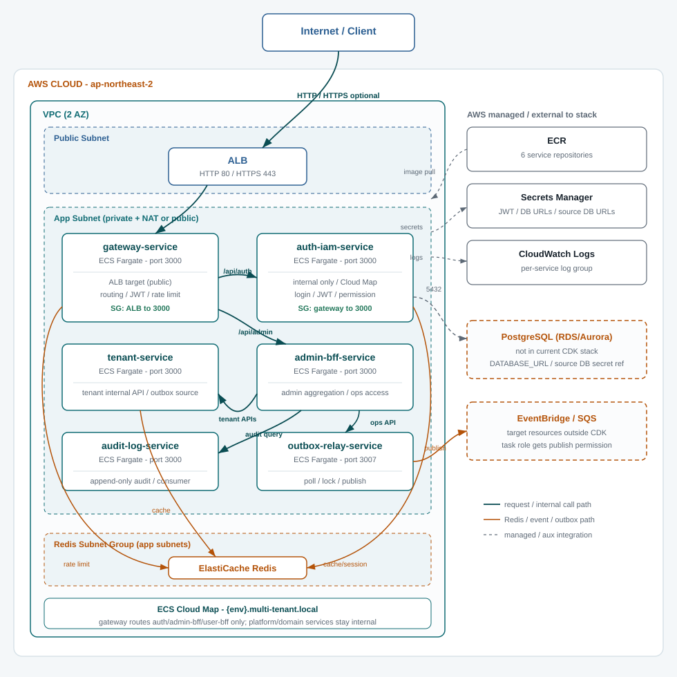

Infra · CDK Review
CDK 인프라 코드 분석
infra/cdk의 2026-06-17 기준 현황입니다.
현재 스택은 gateway-service, auth-iam-service, tenant-service, admin-bff-service, audit-log-service, outbox-relay-service를
하나의 CloudFormation 스택으로 함께 배포합니다.
검토 기준일: 2026-06-17
이번 변경 요약
| 영역 | 내용 |
|---|---|
| 신규 ECS 서비스 | outbox-relay-service ECR repository, task definition, ECS Fargate service, CloudWatch log group, security group을 추가했습니다. |
| Source DB secret | authIamOutboxDatabaseUrlSecretArn, tenantOutboxDatabaseUrlSecretArn, wmsOutboxDatabaseUrlSecretArn context를 ECS task secret으로 주입합니다. |
| Publisher target | outboxPublisherType 기본값은 sqs이며 CDK 관리형 audit event queue로 발행합니다. eventbridge이면 EventBridge PutEvents, sqs이면 SQS SendMessage 권한을 task role에 추가합니다. |
| Audit event queue | 감사 이벤트용 SQS queue와 DLQ를 추가하고, audit-log-service에는 consume 권한과 AUDIT_EVENT_QUEUE_URL을 주입합니다. |
| Audit consumer | audit-log-service의 SqsAuditEventWorker가 queue를 polling하고, 저장 성공 메시지만 삭제합니다. 실패 메시지는 SQS retry 후 DLQ redrive 정책을 따릅니다. |
| 배포 workflow | deploy-outbox-relay-service.yml, deploy-audit-log-service.yml과 기존 서비스 workflow가 audit/outbox desired count, image tag, source secret, publisher target, audit event queue override를 pass-through 검증하도록 보강했습니다. |
CDK context
| Context | 기본값 | 용도 |
|---|---|---|
outboxDesiredCount | 0 | outbox-relay-service ECS desired count |
outboxImageTag | latest | task definition에 기록할 Docker image tag |
outboxSources | auth-iam,tenant | relay polling source 목록 |
outboxWorkerEnabled | true | worker loop 실행 여부 |
outboxPublisherType | sqs | mock, eventbridge, sqs 중 하나 |
outboxEventBridgeBusName | empty | EventBridge publisher 대상 bus 이름 |
outboxSqsQueueUrl | empty | SQS publisher 대상 queue URL override. 비어 있으면 CDK 관리형 audit event queue 사용 |
auditEventConsumerEnabled | true | audit-log-service SQS polling consumer 실행 여부 |
auditEventQueueUrl | empty | audit-log-service 소비 queue URL override. 비어 있으면 CDK 관리형 audit event queue 사용 |
authIamOutboxDatabaseUrlSecretArn | empty | AUTH_IAM_OUTBOX_DATABASE_URL secret ARN |
tenantOutboxDatabaseUrlSecretArn | empty | TENANT_OUTBOX_DATABASE_URL secret ARN |
wmsOutboxDatabaseUrlSecretArn | empty | WMS_OUTBOX_DATABASE_URL secret ARN |
리소스 경계
outbox-relay-service ECR/ECS/CloudWatch/SG, source DB secret 참조, audit event SQS queue/DLQ, EventBridge/SQS IAM 권한.
RDS/Aurora DB 인스턴스, EventBridge bus 리소스, 비감사 SQS queue/DLQ, WMS service, user-bff-service.
gateway-service는 outbox-relay-service를 upstream으로 호출하지 않습니다. 운영 API 접근은 내부 서비스 경로로 제한합니다.
감사 이벤트 전달 경로
감사 로그 저장은 동기 REST 호출이 아니라 각 서비스의 outbox row와 SQS consumer를 통해 처리합니다.
auth-iam-service / tenant-service / future wms-service
└─ same DB transaction: outbox_events pending 저장
↓
outbox-relay-service
└─ source별 DB URL secret으로 pending row claim
└─ OUTBOX_PUBLISHER_TYPE=sqs이면 CDK 관리형 audit event queue로 SendMessage
↓
multi-tenant-{env}-audit-events-queue
└─ visibility timeout / retry / DLQ redrive
↓
audit-log-service
└─ AUDIT_EVENT_QUEUE_URL polling
└─ eventId unique key로 audit_logs append-only 저장
└─ 저장 성공 시 DeleteMessage| Queue | multi-tenant-{env}-audit-events-queue. 외부 queue를 써야 하면 auditEventQueueUrl 또는 outboxSqsQueueUrl context로 override합니다. |
|---|---|
| DLQ | multi-tenant-{env}-audit-events-dlq. CDK 기본 redrive 정책은 최대 수신 5회 후 DLQ 이동입니다. |
| 멱등성 | audit_logs.event_id unique key를 기준으로 같은 이벤트가 재전달되어도 중복 row를 만들지 않습니다. |
| 운영 잔여 | dev AWS end-to-end 증적, DLQ 조회/처리 runbook, replay 승인, custom metric/alarm 기준은 후속 운영 작업입니다. |
기능별 리소스
gateway-service-stack.ts가 생성하는 AWS 리소스를 기능 단위로 정리합니다.

| 기능 | gateway-service | auth-iam-service | tenant-service | admin-bff-service | audit-log-service | outbox-relay-service |
|---|---|---|---|---|---|---|
| ECR repository | O | O | O | O | O | O |
| ECS Fargate task/service | O | O | O | O | O | O |
| ALB 노출 | O (public) | X (내부 전용) | X (내부 전용) | X (내부 전용) | X (내부 전용) | X (내부 전용) |
| Cloud Map 등록 | - | O | O | O | O | O |
| Container port | 3000 | 3000 | 3000 | 3000 | 3000 | 3007 |
| ElastiCache Redis 접근 | rate limit | cache/session | cache/readiness | - | - | - |
| Secrets Manager | JWT_SECRET | DB URL, JWT, internal auth | DB URL, internal auth | auth/tenant/audit internal auth | DB URL, audit internal auth | source별 outbox DB URL |
| CloudWatch Logs | O | O | O | O | O | O |
| RDS/PostgreSQL | - | CDK 미포함 (외부 secret 참조) | CDK 미포함 (외부 secret 참조) | - | CDK 미포함 (외부 secret 참조) | source DB secret 참조만 수행 |
| EventBridge/SQS | - | outbox event 저장 | outbox event 저장 | - | SQS consume/delete 권한, AUDIT_EVENT_QUEUE_URL | PutEvents 또는 audit queue SendMessage 권한 |
2 AZ. 기본은 private app subnet + NAT Gateway 1개이며, gatewayUseNatGateway=false이면 dev 비용/Elastic IP 한도 대응용 public subnet 배치를 사용할 수 있습니다.
Fargate 클러스터에 Container Insights와 Cloud Map private DNS namespace {env}.multi-tenant.local을 구성합니다.
ALB, gateway, auth, tenant, admin-bff, audit-log, outbox-relay, redis SG를 둡니다. gateway는 auth/admin-bff만 호출하고, tenant/audit/outbox는 BFF 또는 내부 운영 경로에서만 접근합니다.
1노드 기본 cache.t4g.micro. gateway rate limit, Auth/IAM cache/session, tenant readiness/cache 의존성에서 공유합니다.
인터넷 facing ALB는 gateway-service만 target group으로 연결합니다. ACM ARN이 있으면 HTTPS 443 listener를 만들고 HTTP 80은 HTTPS로 리다이렉트합니다.
gateway upstream은 Auth/IAM과 Admin BFF로 구성했습니다. tenant-service, audit-log-service, outbox-relay-service는 Admin BFF 또는 내부 운영 경로에서 접근합니다.
outboxPublisherType=eventbridge이면 EventBridge PutEvents, sqs이면 SQS SendMessage 권한을 outbox task role에 추가합니다. SQS 기본 대상은 CDK 관리형 audit event queue이고, EventBridge bus는 외부 리소스로 연결합니다.
auditEventConsumerEnabled가 false가 아니면 audit task role에 SQS ReceiveMessage, DeleteMessage, ChangeMessageVisibility, GetQueueAttributes 권한을 부여합니다.
desired count가 0이어도 ALB, NAT Gateway, ElastiCache, ECR 저장 용량, CloudWatch Logs 보존 비용은 발생할 수 있습니다.
주요 CfnOutput: GatewayServiceRepositoryUri, GatewayLoadBalancerDns, GatewayRedisEndpoint, AuthIamServiceRepositoryUri, AuthIamServiceInternalUrl, TenantServiceRepositoryUri, TenantServiceInternalUrl, AdminBffServiceRepositoryUri, AdminBffServiceInternalUrl, AuditLogServiceRepositoryUri, AuditLogServiceInternalUrl, AuditEventQueueUrl, AuditEventDeadLetterQueueUrl, OutboxRelayServiceRepositoryUri, OutboxRelayServiceInternalUrl, 각 서비스 desired count와 image tag.
배포 순서
- GitHub Environment에 6서비스 desired count와 image tag를 모두 설정합니다.
OUTBOX_SOURCES에 포함된 source마다 대응하는*_OUTBOX_DATABASE_URL_SECRET_ARN을 저장합니다.audit-log-servicedesired count를 0보다 크게 실행하려면AUDIT_DATABASE_URL_SECRET_ARN과AUDIT_INTERNAL_AUTH_SECRET_ARN을 설정합니다.OUTBOX_PUBLISHER_TYPE=eventbridge이면OUTBOX_EVENTBRIDGE_BUS_NAME을 설정합니다.sqs는 기본 CDK audit event queue를 사용하며, 외부 queue를 쓰는 경우에만OUTBOX_SQS_QUEUE_URL또는AUDIT_EVENT_QUEUE_URL을 설정합니다.deploy-outbox-relay-service.yml을 수동 실행합니다. workflow는 먼저outboxDesiredCount=0으로 ECR 등 기본 인프라를 만들고, 이미지를 push한 뒤 최종 desired count로 다시 배포합니다.deploy-audit-log-service.yml을 수동 실행할 때runAuditPrismaMigration=true를 선택하면 image deploy 전에 audit DB migration을 적용합니다.
검증
2026-06-17 기준 아래 검증을 수행했습니다.
pnpm --filter audit-log-service typecheck
pnpm --filter audit-log-service build
pnpm --filter outbox-relay-service typecheck
pnpm --filter outbox-relay-service build
pnpm --filter @multi-tenant/infra-cdk typecheck
pnpm --filter @multi-tenant/infra-cdk synth
ruby -e 'require "yaml"; ARGV.each { |f| YAML.load_file(f); puts "yaml ok #{f}" }' .github/workflows/deploy-*.yml
docker compose -f docker/local/docker-compose.yml config
COMPOSE_ENV=dev docker compose -f docker/deploy/docker-compose.yml config실제 AWS cdk deploy는 계정 secret과 배포 승인 대상이므로 이 문서에서는 로컬 typecheck/build, CDK synth, workflow YAML parse, Docker compose config 검증까지만 기록합니다.